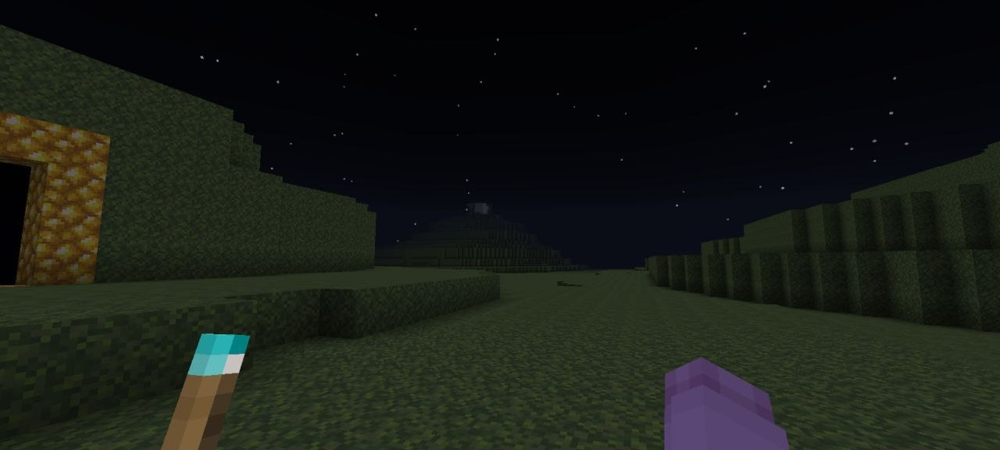

Multiple Minecraft Players Report Worlds Being Replaced by Unknown Save File

A growing number of Minecraft players have reported an unusual issue in which existing single-player worlds are allegedly replaced by an unfamiliar save file with restricted gameplay options.
According to posts shared across multiple online communities, affected players claim the replacement world cannot be modified through normal game settings. Difficulty, game rules, and multiplayer options appear to be locked, while the world automatically enables LAN access every time it is loaded.
Several users state that deleting the save file, reinstalling Minecraft, or restoring backups does not permanently resolve the issue. The same world reportedly returns after launching the game again.
No evidence has confirmed that these disappearances are connected to the reported save file. Community moderators have urged users to avoid speculation and treat the timeline as unverified.
Meanwhile, players who continue accessing the mysterious world claim it changes over time.
New structures, roads, and buildings allegedly appear without player interaction. More unusually, different users have shared screenshots showing nearly identical expansions despite playing on separate computers.
Some claim the world's size increases whenever another player begins reporting the same phenomenon, though this remains impossible to verify.
Researchers within the Minecraft data-mining community are currently collecting affected save files in an attempt to determine whether the reports originate from modified game data, malicious software, or an elaborate online hoax.
Until further information becomes available, players are advised to back up important worlds and avoid opening save files obtained from unknown sources.